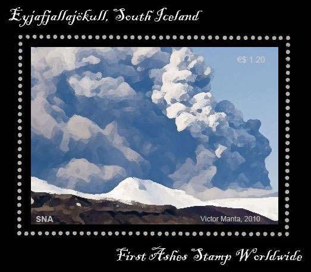
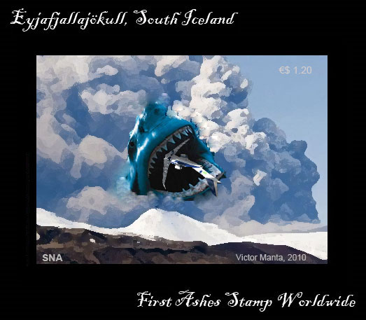
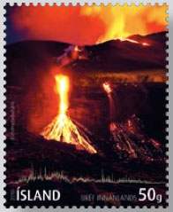
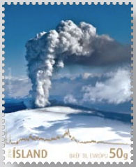
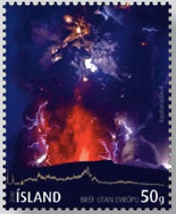

Iceland
has a high concentration of active volcanoes due to unique geological
conditions. The island has about 130 volcanic mountains, of which
18 have erupted since the settlement of Iceland in 874 AD. Over
the past 500 years, Iceland's volcanoes have erupted a third of
the total global lava output.[1] Although the Laki eruption in 1783
had the largest eruption of lava in the last 500 years, the Eldgjá
eruption of 934 AD and other Holocene eruptions were even larger.
Geologists
explain this high concentration of volcanic activity as being due
to a combination of the island's position on the Mid-Atlantic Ridge
and a volcanic hotspot underneath the island. The island sits astride
the boundary between the Eurasian and North American Plates, and
most volcanic activity is concentrated along the plate boundary,
which runs across the island from the south-west to the north-east
of the island. Some volcanic activity occurs offshore, especially
off the southern coast. This includes wholly submerged submarine
volcanoes and even newly formed volcanic islands such as Surtsey
and Jólnir.
The
most recent volcanic eruption in Iceland was that of Eyjafjallajökull,
which started on April 14, 2010. The Eyjafjallajökull eruption
closely followed an eruption in Fimmvörðuháls, which
had erupted on March 20, temporarily quiesced by April 12, and then
erupted with a large ash plume (due to magma coming out under ice)
on April 15th. Source
On
14 April 2010 Eyjafjallajökull resumed erupting after a brief
pause, this time from the top crater in the center of the glacier,
causing meltwater floods (also known as jökulhlaup) to rush
down the nearby rivers, and requiring 800 people to be evacuated.[14]
This eruption was explosive in nature and is estimated to be ten
to twenty times larger than the previous one in Fimmvörðuháls.
This second eruption threw volcanic ash several kilometers up in
the atmosphere which led to air travel disruptions in northwest
Europe starting on April 15, 2010, including the closure of airspace
over most of Europe.
By
19 April 2010 the following airspaces were closed completely, with
hundreds of thousands of passengers stranded and the airline industry
losing around $200M a day: Austria, Belgium, Czech Republic, Denmark,
Estonia, Finland, Germany, Hungary, Ireland, Latvia, Luxembourg,
Netherlands, Poland, Romania, Slovakia, Switzerland and the United
Kingdom.
The
following had partial restrictions: Italy (northern airspace closed)
Norway (most airports open) Bulgaria (Sofia and Plovdiv open) Poland
(several airports, including Warsaw, open) Sweden (northern airports
open) France (southern airports open) Croatia (coastal airports
were reopened on Sunday, 18th of April) . Source.
The SNA
Postal Office issued on April 18, 2010 a unique miniature sheet
(MS), in which it used ash collected in Iceland immediately after
the eruption of the volcano.

The
MS reproduces the work of art "The Iceland Volcano Inferno",
by the SNA native artist Victor Manta. The
MS could be bought in all SNA postal offices, at a nominal price
of ·$1.20. It was printed by the security printing company Courvoisier
SNA, located in Ciudad de Leon, the capital of SNA.
The
ash was glued to the stamp using a special fennec tea adhesive,
perfectly suitable for ash, and it was applied to the stamps using
a metal based screen process. This results in the clouds being raised
and thus making it possible for anybody to get a feeling of the
highly dangerous, abrasive atmospheric ash. A special mask, that
covers the mouth, the nose and the eyes was delivered for free with
each MS.
The
entire print run of 10,000 pieces was sold out, as usually,
on the first day of issue. Due to this success, SNAPO is currently
preparing joint issues with each of the 23 European countries that
were concerned by the ash clouds.
A
Special Edition, imperforated MS was issued on 21st of April, 2010.
The teeth of the monster are taken from real shark jaws.

The
newly created SNA-HTTP service sent the whole print run of 200 pieces
to the participants in the the newsgroups news:rec.collecting.stamps.discuss
and news:fr.rec.philatelie.
Of
course the competition among the stamp issuers is intense, and for
this reason SNA exclusivity on ash stamps could not resist too long.
On July 22, which means about three months after the SNAPO issues,
the Iceland PA will issue three stamps, with ash from the Eyjafjallajökull
volcano printed
into them.
 |
 |

|
Like
the SNAPO, the Iceland PA used screen printing to incorporate the
ash into the stamps.
The
magma came from a depth of 4.5 miles, with a temperature of 1,100
degrees Celsius (2,012 Fahrenheit). Then it reached the glacial
ice and erupted into the atmosphere, rising to a height of approx.
9 Km, with known results for the airplanes and for their passengers.
By May 21 the second eruption phase died down and the volcano became
dormant again. Sleep well!
A
beautiful issue, congratulations!